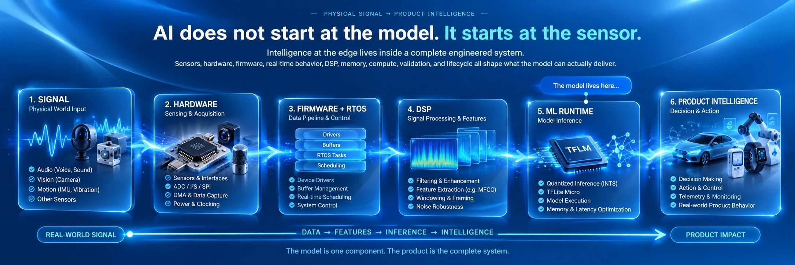
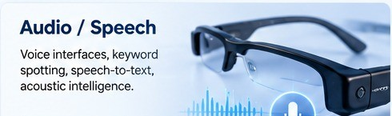
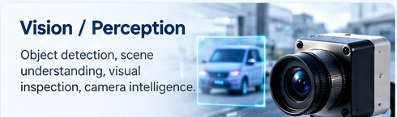
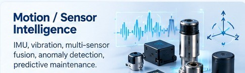
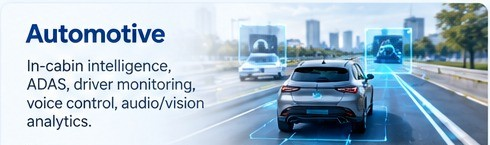
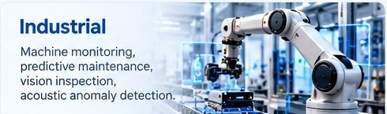
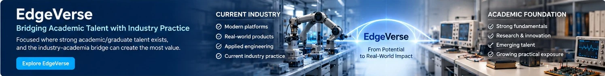

LearnFundamentals
Books, guides, and reference material for practical Embedded Systems and EdgeAI.
Edge2XAI
Edge2XAI is an independent engineering knowledge and learning platform focused on the intersection of Embedded Systems and practical EdgeAI — through books, proven reference code, hands-on courses, and 1:1 guidance by request, with selective technical advisory.
Books, guides, and reference material for practical Embedded Systems and EdgeAI.
Hands-on courses and reference implementations for real hardware and use cases.
Techniques and patterns applicable to multiple industries and real-world environments.
Initiatives like EdgeVerse to connect academic talent with current industry practice.

Intelligence at the edge lives inside a complete engineered system. Sensors, hardware, firmware, real-time behavior, DSP, memory, compute, validation, and lifecycle all shape what the model can actually deliver.
Architecture that transfers
EdgeAI can be viewed through two different lenses. Audio, vision, and motion/sensing are reusable application patterns. Automotive, industrial, healthcare, and other product sectors are domains where one or more of those patterns come together.
These patterns recur across many products and industries.

Wearables, keyword spotting, speech commands, acoustic events, and local speech interfaces.

Presence, objects, defects, gestures, events, and low-power visual intelligence.

Motion, vibration, orientation, sensor fusion, anomaly detection, and condition signatures.
A domain may combine audio, vision, motion, and other sensing in the same embedded system.

Voice control, driver/cabin sensing, sensor fusion, diagnostics, and predictive functions.

Condition monitoring, visual inspection, acoustic anomalies, predictive maintenance, and automation.
Wearable sensing, physiological monitoring, local signal analysis, alerts, and privacy-aware intelligence.
The first Edge2XAI packaged-learning focus is audio, but the engineering method — acquisition, streaming, DSP, inference, validation, and product behavior — is intended to remain reusable across application patterns and domains.
Developing Industry ↔ Academia Initiative
EdgeVerse is being developed for engineering ecosystems where graduate talent is strong but students and faculty need greater exposure to current platforms, product engineering, applied projects, industry expectations, and emerging Embedded Systems / EdgeAI workflows.

The objective is not to replace academic fundamentals. It is to help universities and students connect those fundamentals to the engineering environment they are preparing to enter.
Explore EdgeVerseFoundation of Edge2XAI

An architecture-first guide that follows one on-device audio system end to end. The same material is intended to grow into a packaged learning experience with video tutorials, hands-on labs, and a reference Git repository — with the architecture reusable across audio-based EdgeAI applications.
See both books →Coming to Edge2XAI Knowledge: Engineering Notes · Q&A · RCA & Debugging Library · Reference Architectures.
Independent Embedded Systems & EdgeAI Engineer, Creator of Edge2XAI. Twenty-plus years across firmware, RTOS-based systems, device drivers, and hardware/software integration — now focused on applying that same engineering discipline to on-device inference and production Edge AI.
“EdgeAI is one of the fastest-moving shifts I've seen in twenty-plus years of embedded work, and yet almost everything written about it falls into one of two buckets: deep machine-learning theory that never touches a real board, or a demo-and-done tutorial that stops the moment the LED blinks.”
That gap is what Edge2XAI is being built around. The books, courses, reference implementations, training, mentorship, EdgeVerse, and selective advisory all start from the same premise: an experienced embedded engineer does not need to start over to learn EdgeAI. Hardware, timing, memory, reliability, and production discipline remain part of the architecture; the new task is learning how DSP and ML fit into that system.
Books, courses, 1:1 guidance, EdgeVerse, or a focused technical discussion — start a conversation.